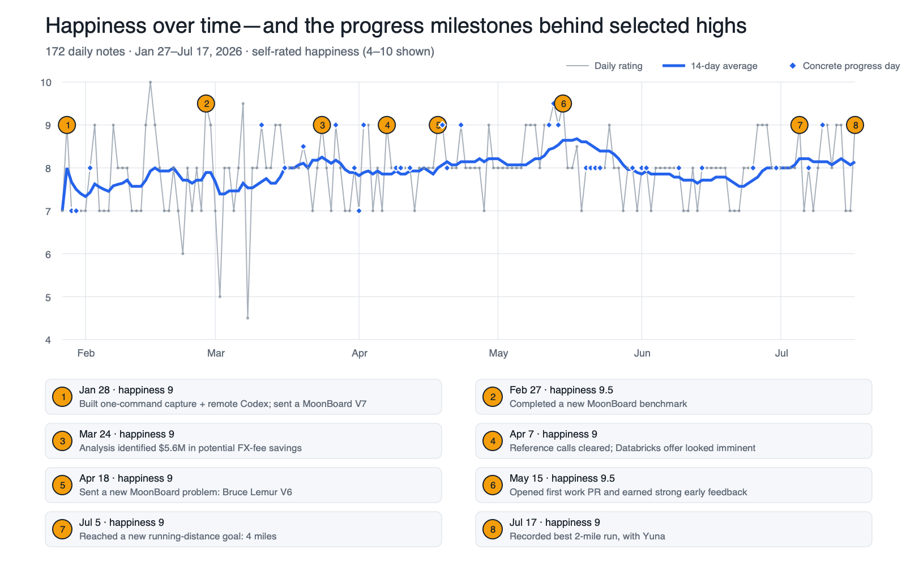
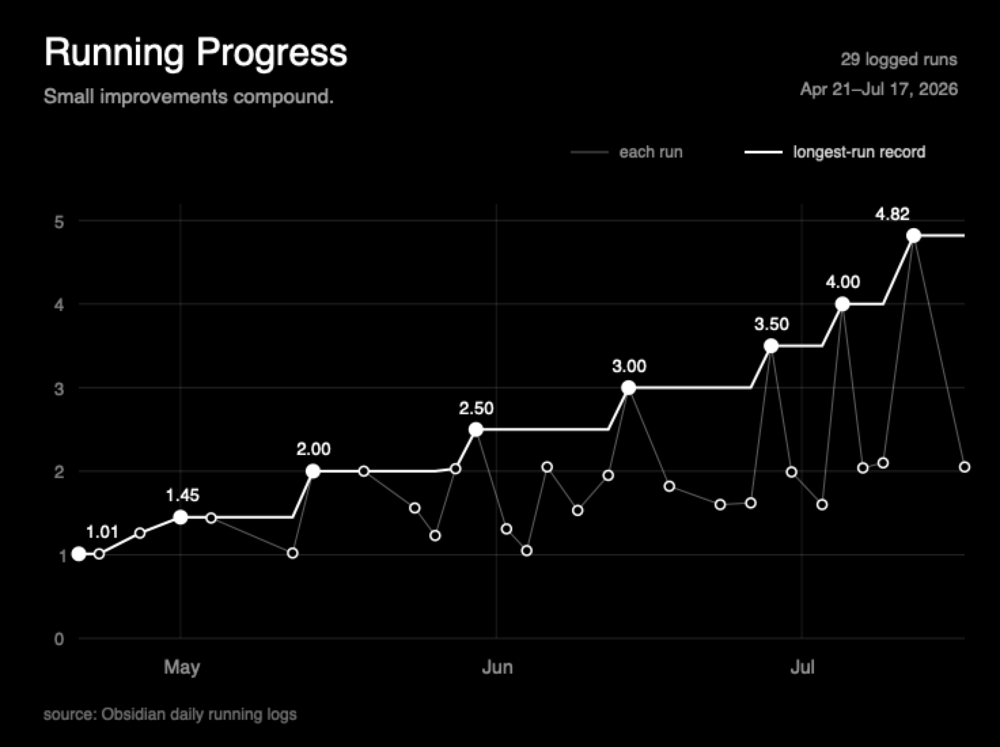
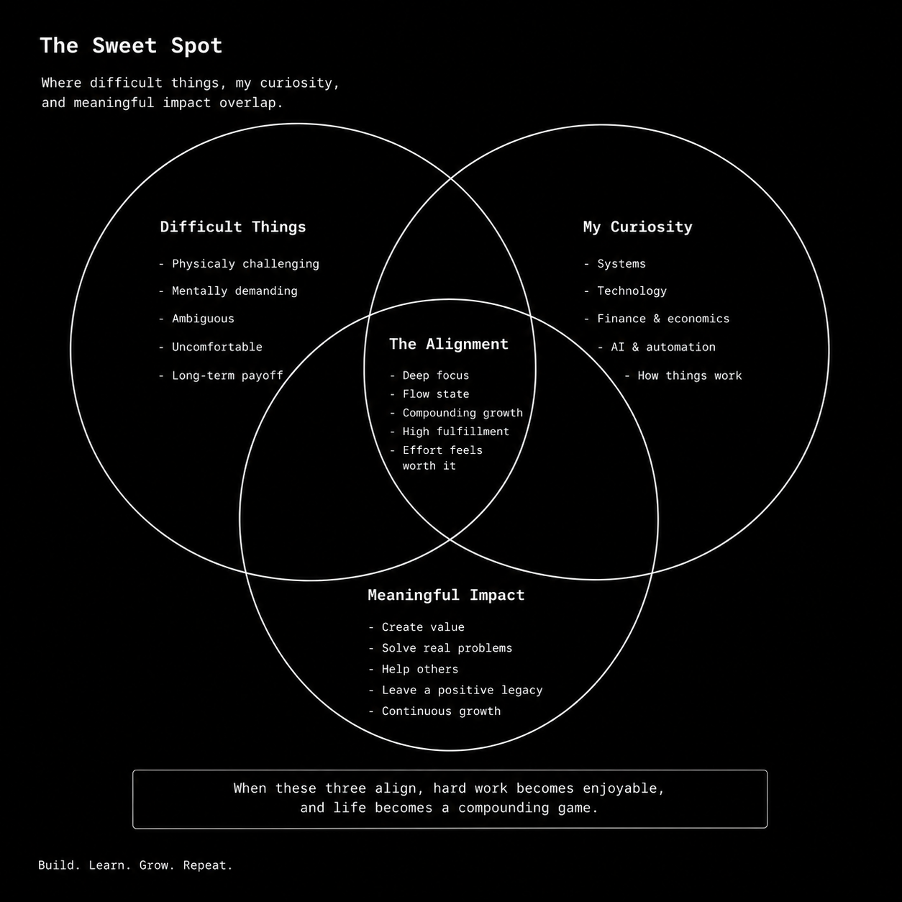

The Privilege of Liking Difficult Things
Happiness to me is progressing through hard things. Looking at the stats I log in my daily Obsidian notes, my happiest days tend to be the days when I solve a difficult problem or make progress toward a hard-to-reach goal. Happiness also comes from understanding the future I want and setting goals that move me toward it, regardless of what society, my community, or my temporary urges tell me.
When I was 8 or 9 years old I received a webcam as a gift so I could communicate with my grandparents. I remember plugging it into my PC at the time and it didn't work, there was some sort of hardware or software error. So I looked up forums, googled the error, and started debugging the issue. It took me about a weekend of trial and error but I figured it out. There was some sort of file that I had to edit for it to make it compatible with my operating system. At the time I didn't know it but this would be one of the first examples of discovering my innate passion for solving hard problems.
Over time, I realized that the webcam was an early example of a pattern that would shape my life. I am happiest when three conditions overlap: the problem is difficult enough to demand growth, I am curious enough to keep returning to it, and solving it creates something useful. I call this intersection the Sweet Spot.
Difficulty alone is not inherently valuable. Curiosity alone can become aimless fixation, and impact pursued without genuine interest can become exhausting. But when all three align, effort begins to feel like play, progress becomes self-reinforcing, and the skills I would have developed for free become valuable to other people.
I am now 31 years old and I spend my time designing systems, debugging pipelines, and thinking deeply about hard problems that I need to solve. I have ended up in the privileged position of living the kind of life I wanted, both inside and outside of work.
Happiness Data
Across 172 daily notes from January 27 through July 17, 2026, the days when I explicitly recorded concrete progress on a difficult work, building, climbing, or running goal averaged 8.40 happiness, compared with 7.83 on other days. On those progress days, I was also more than twice as likely to rate the day a 9 or higher.

Source: 172 of my Obsidian daily notes. I counted “progress days” as days when I recorded concrete movement in work, climbing, running, or a personal project. This shows correlation, not causation.
Progression
Thinking deeply about how this works, I realized that I had trained myself to enjoy the process of knowing almost nothing, progressing incrementally, and eventually becoming capable. The hardest part is maintaining faith during the periods when nothing seems to be working. Progress is often invisible before it becomes obvious.
Progress compounds, and consistently showing up—especially when I do not feel like it—builds capacity over time. I see this clearly in difficult physical pursuits such as MoonBoard climbing and running.
The MoonBoard is a standardized climbing wall connected to an app that tracks the problems I complete. Some problems are designated as benchmarks for each grade. Because the benchmark set changes infrequently, it provides a relatively stable measure of progress over time.
There are months when I complete only one or two new problems and weeks when I complete five or ten. Progress is highly variable and rarely linear, which I have found to be true across many parts of life. It took me two years to complete every V4 benchmark. I finished most of them during the first year, but the final problem took another year. I could have stopped trying, but I continued falling on it until one day everything aligned and I sent it.
That felt incredible. Now that I am running, I feel something similar.

In my late teens and early 20s, I valued partying, going out, experiencing new things, and traveling. By my mid-20s, I realized that these experiences often gave me a fleeting sense of happiness. The experience would end, and sometimes the physical or emotional hangover left me worse off than before. What I found instead was a more durable form of satisfaction: making progress on difficult things that genuinely interested me.
I've always loved technology so being able to play with new things such as databases, Python, and technological tools felt like play. I started valuing learning on the weekends and building side projects which eventually helped me build a toolbox of skills. Without realizing it, I had gradually organized my life around this intersection.
The Sweet Spot

Difficult Things
When I learn to love difficult things, I naturally become a more capable person. A task is often difficult because I have not yet developed the skills required to accomplish it. It is pretty simple when I think about it, but what stops me from doing them?
For me, sometimes I wake up and feel sore, I don't want to run. Maybe my forearm hurts or my fingers are swollen from moonboarding. I get a ping about something breaking or a request that initially seems beyond my understanding.
The first step to get through this is knowing that I've done difficult things before. I've changed as a person over time and learned new things that I didn't know at one point in time. I take the problem one step at a time until I eventually cross the boundary between being unable to do something and being capable of it.
Choosing the difficult things to spend time on also depends on my curiosity. Difficult things also become a lot easier when I am actually interested in the thing itself. This is where curiosity comes in.
Curiosity
Being naturally curious about how things work is indeed a blessing. But curiosity can also become a fixation on things that do not provide value. I need to be curious about things that can drive my ambition for solving hard problems and also things that ultimately create value.
For me, this meant understanding tools that could compound and automate work. It was combining two things together in my career (finance/accounting and data/engineering). Outside my career, it meant climbing, running, and learning to work with difficult dogs.
Curiosity is what sustains attention. When the number of possible directions becomes overwhelming, curiosity helps determine where I am willing to invest sustained attention.
Impact
Combining finance and accounting with data and engineering meant I could understand a problem from both sides. I could understand what the finance team needed, then build systems that actually solved it. That was where curiosity stopped being only a hobby and became useful to other people.
Happiness is not only doing things selfishly but also creating value for others. Solving a difficult problem feels good on its own, but it feels better when the result saves someone time, saves money, or makes their work less painful.
Privilege
The privilege is not merely liking hard things. It is finding difficult things that satisfy my curiosity, create impact, and therefore make sustained effort intrinsically rewarding.
I am also privileged to have the health, time, resources, and opportunities required to pursue these problems. Liking difficult things would mean much less if I were never given the space to explore them or the chance to turn those interests into a career.
The market values the combination of skills I happened to build. But this took many years of self-reflection, planning for the future, and changing my values as I grew older.
Fixing the webcam bug was the first time I experienced the Sweet Spot. I was curious, the problem was difficult, and solving it had a useful purpose. The rest of my life became a larger version of that weekend. I now also explore unfamiliar systems, search through obscure information, and troubleshoot relentlessly until something finally works.
Subscribe
Get new posts by email.